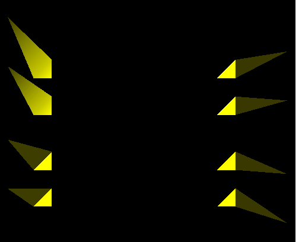
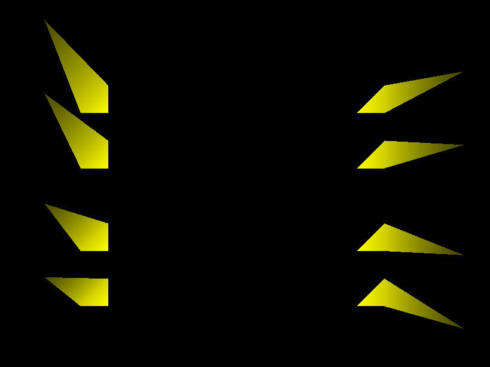
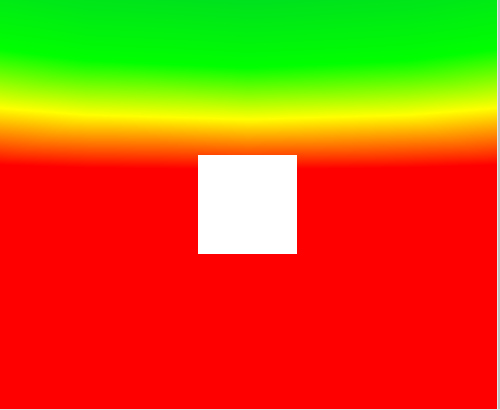
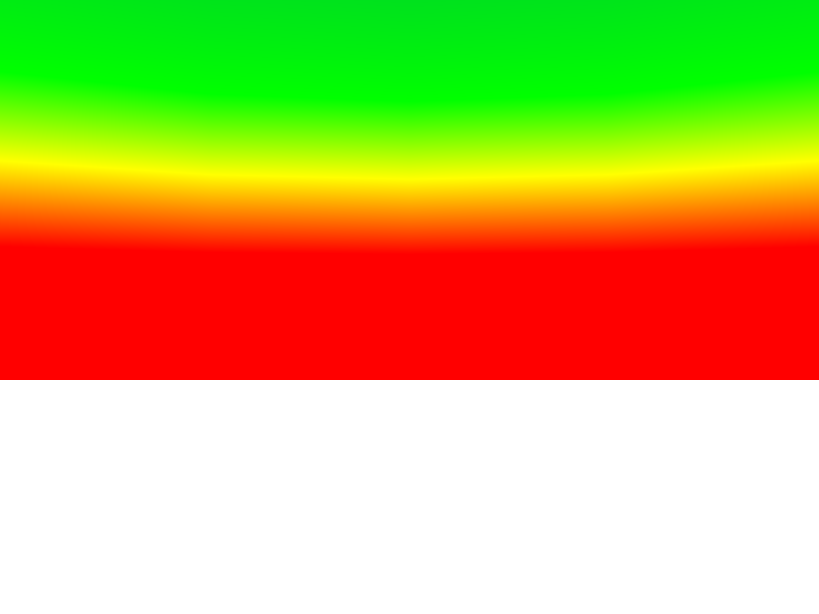
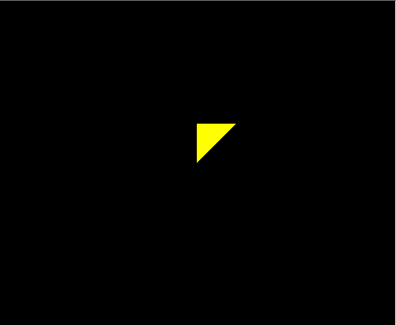
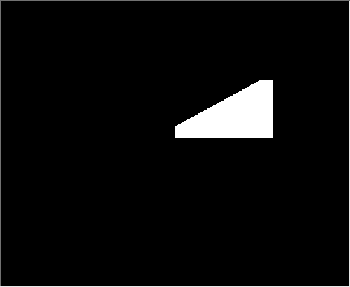

White_dune problems:
-
triangle_fan_strips_smoothing.x3dv: dune doesn't smooth normals on
[Indexed]TriangleFanSet and [Indexed]TriangleStripSet.


-
background_z_oriented.wrl: dune doesn't rotate Background node.


-
background_pure_white.wrl: when you look around in dune, strange yellow-black
colored background appears. While background should clearly be just white,
proved by placing clear pure_white.png texture.
Strangely, the yellow color seems to come from
triangle's material color... (when you change it e.g. to red, the sky
also gets red...).

-
non_convex_face.wrl: dune doesn't handle non-convex faces.
text_textured.wrl: dune doesn't texture text.

All screenshots were captured with view3dscene, so you can recreate them
and investigate models by view3dscene. They show rendering correct with
respect to X3D spec, assuming view3dscene and xj3d are correct.
As fas as I know, view3dscene (SVN as of today, 2008-08-03)
results are correct for all of these models.
(Xj3d notes: note that Xj3d also doesn't render it all perfectly,
although it fails in other places and I'm pretty sure these are
unrelated xj3d faults:
-
cylinder_texture_mapping_nosolid gets Z-order problems in Xj3d.
Most probably because they use blending for rendering.
(view3dscene detects simple yes/no alpha channel and uses alpha_test
for such textures, as alpha_test avoids Z order problems).
-
background_z_oriented has inverted zenith and groud direction
(seems they have a bug and treat skyAngle wrong, spec says clearly
it's an angle from the zenith). Anyway, it shows correctly that
groun-zenith are oriented on Z axis, so Background is correctly
rotated.
-
textured text doesn't seem to be supported by xj3d.
The reason is that rendered text is handled as lines, not faces.
-
A second animated PROTO instance is not rendering animation
)